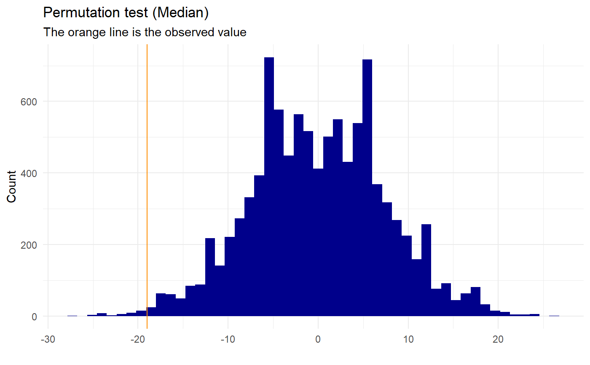

permutation_median.RdPerforms a permutation test on a dataset (dataframe) testing if the median of two different groups are significantly different (the difference in medians are significantly different from 0). It prints a permutation-plot with the permuted null-distribution and the observed value (simple or nice depending on choice) and gives a p-value of the medians being the same.
permutation_median(dataset, name, count, group1, group2, no_perm, plot, gg_plot)
| dataset | the dataset containing the data you want to test in the form of a data frame – the data needs to contain (at least) a column with the names of the two groups you want to test against each other and a column with the values of the different cases for these groups. |
|---|---|
| name | the name of the column with the names of the two groups (string) |
| count | the name if one of the groups (string) |
| group1 | the name of the other group (string) |
| group2 | the name of the other group (string) |
| no_perm | the number of permutations to make, default=10000 |
| plot | whether or not you want it to plot the distribution of the permutation at all, default=T |
| gg_plot | a logic value indicating whether a nice plot should be printed (requires ggplot2), default=F (as opposed to a simple plot) |
| progress | a logic value indicating whether a progress bar should be printed, default=T |
The calculations that are done in this function are the difference in means (mean(group1)-mean(group2)). This will be the observed value. The dataset values are then randomly shuffled and the difference in mean are calculated again and saved. This is done as many times as the no_perm is defined as, and thereby a null-distribution is made. A p-value is then calculated as the amount of times the absolute value of the permuted values are bigger or equal to the absolute value of the observed + 1 divided by the total amount of permutations + 1:
$$p_{val} = (\sum(|perm_{val}| \ge |observed|)+1) / (\#permutation+1)$$
We add one as a precaution, since we do not know the value of the next permutation and thereby always should expect the “next” value to be at least as extreme as the observed. This test is two-sided.
permutation_mean returns a list with the class “htest” containing the following:
the method of the test
the p-value of the test
the values the observed means for the different groups and the difference
the names of the two groups tested
set.seed(0) names <- c(replicate(50,"Group1"), replicate(50, "Group2")) test <- data.frame(c(sample(c(1:100), 50, replace=T), sample(c(30:100), 50, replace=T)), names) names(test) <- c("value","names") permutation_median(test,"names","value","Group1","Group2", no_perm=10000, plot=TRUE, gg_plot=TRUE, progress=FALSE)#> Warning: Data is normally distributed, it might be better to use a parametric test#> #> Permutation Test (Median) #> #> data: Permutation for group: Group1 and Group2 #> p-value = 0.0106 #> sample estimates: #> Median first group Median second group #> 43.5 62.5 #> Observed median difference #> -19.0 #>